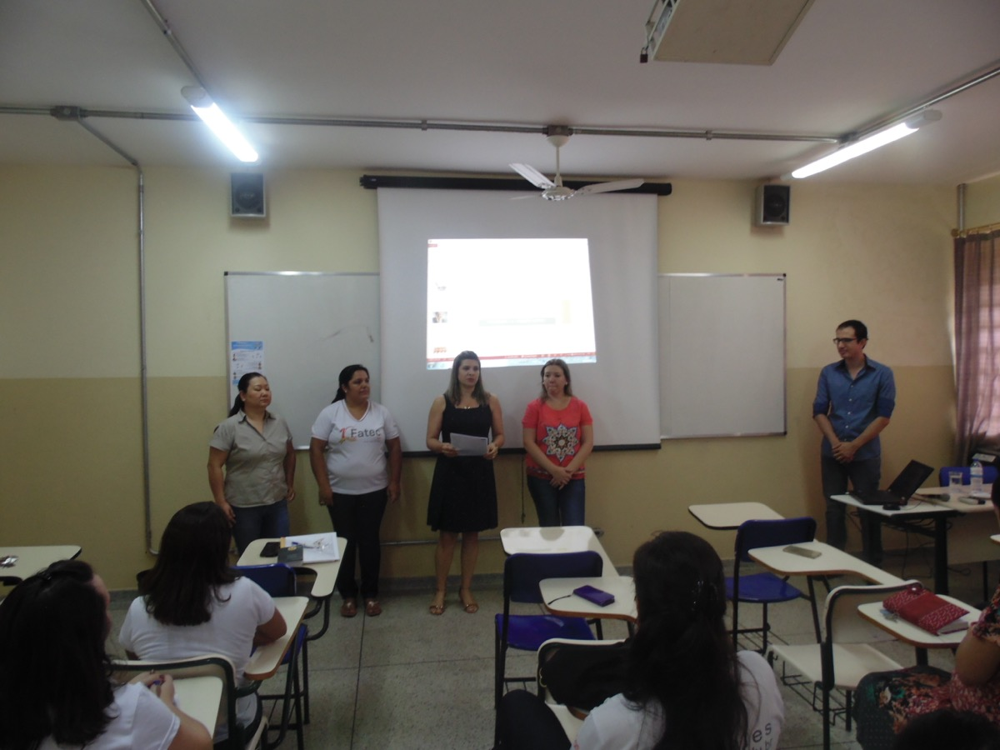
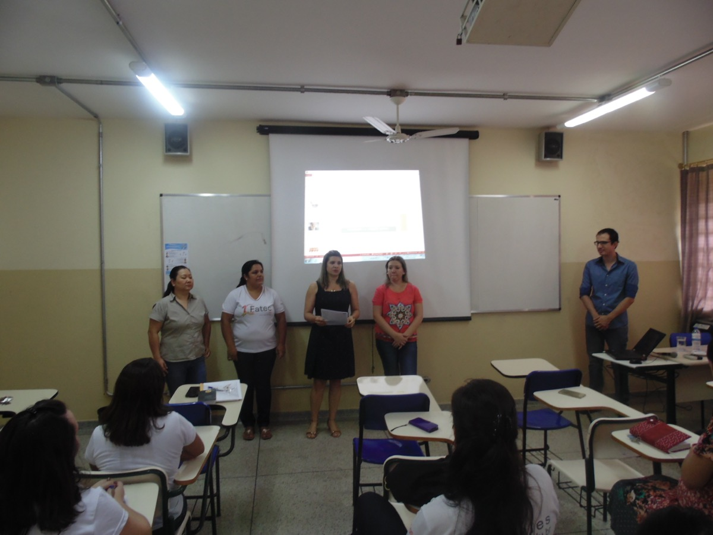

Olá, sejam bem vindos!

Meu nome é Leonardo, tenho 21 anos de idade e trabalho atualmente como Estagiário de uma escola municipal de Jales. Atualmente estou o 2º Semestre do curso Tecnologia em Sistemas para Internet, graças a Fatec esotu tendo oportunidade de aprender com o melhor corpo docente da região.
Tenho grandes e vários planos pro futuro, no momento sei que estou na área certa, gosto muito da parte de Design e é nela que pretendo seguir carreira. Sei que estou no lugar certo pois tenho professores capacitados e que se importam com o aprendizado dos alunos, tenho orgulho de fazer parte da Fatec, um ótima infraestrutura para atender um grande número de estudantes e com a maior qualidade de ensino de toda a região. Eu recomendo a Fatec!
O que é a FATEC Jales?
A Fatec é uma instituição de ensino estadual, pertence ao Centro Paula Souza. É referência na região de Jales e todo noroeste paulista, tem em seu corpo docente professores doutores e mestres de alto nível.
Abaixo podemos observar as instalações da Fatec Jales, venha fazer parte e mude sua vida profissional completamente.
Possui laboratórios com os melhores equipamentos para comodidade dos alunos, que também fora do horário de aula pode comparecer á Fatec e realizar trabalhos e pesquisa.
Saiba mais
 

Meus Hobbies
Sou um cara bem caseiro, gosto muito de assistir filmes em casa, jogar jogos de tiro, curto muito filmes de Ficção Científica, Ação e Comédia, entre os de Ação eu curto muito os filmes do Universo Cinematográfico da Marvel (Homem de Ferro, Thor, Vingadores). Não curto muito praticar esportes, prefiro mais assisti-los, gosto muito de ver a NBA, a NFL (Liga de Futebol Americano) e futebol europeu.
Entre os jogos que eu gosto está o Battlefield 1, CoD WWII, Counter-Strike Global Offensive e também GTA V, como tenho pouco tempo pra jogar, por conta do trabalho e dos estudos eu os jogo mais aos finais de semana. Abaixo está as imagens do tipo de entretenimento que mais gosto: